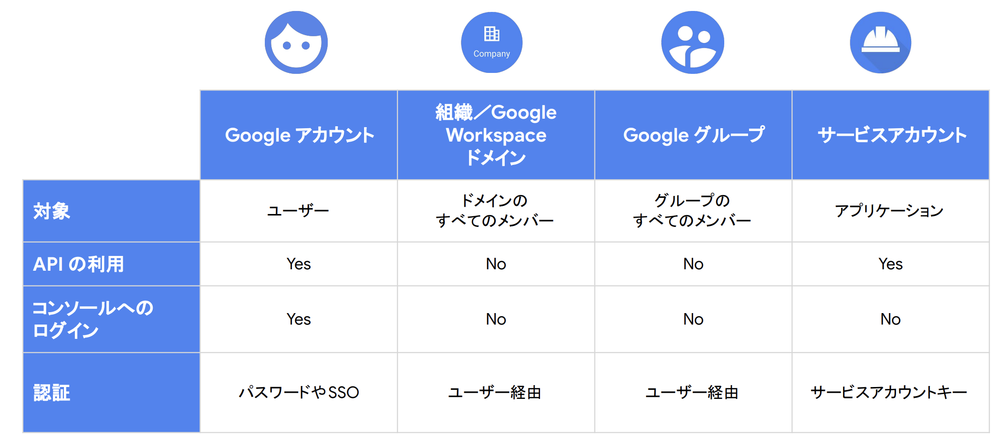

IAM¶
リソースやユーザーの管理にはIAM（Identity and Access Management）を利用する。
IAMを利用することで、誰が、どういう操作を、何に対して、どういう条件でを制御することができる。
AWSと同じような用語が用いられるがそれぞれで役割が異なるため注意する。

GCPのIAMの本質はリソースベースでのアクセス制御である。
以下の流れで、リソース側で誰がどの操作をして良いかについて定義を行う。
IAM Roleにより権限を定義する
IAM PolicyによりIAM RoleとPrincipalを紐づける（バインディング）
IAM Policyをリソースに付与する
プリンシパル¶
誰がについては、principalとも呼ばれ、大きく以下の4つが対象となる。

まずは知っておくべき IAM の基礎と最新の便利機能
プリンシパルにはそれぞれメールアドレス形式の識別子がを持つ。
プリンシパルの種類 |
識別子形式 |
説明・特徴 |
|---|---|---|
Google アカウント |
user:alice@gmail.com |
個人のGoogleアカウント（Gmail や Workspace）。人間のユーザー。 |
Cloud Identity ドメイン |
domain:example.com |
ドメイン全体にIAM権限を付与。Google Workspace や Cloud Identity ドメインが対象。 |
Google グループ |
group:dev-team@example.com |
複数ユーザーを一括管理するメールグループ。IAM権限をまとめて付与可。 |
サービス アカウント |
serviceAccount:my-sa@project.iam.gserviceaccount.com |
アプリケーションやGCPサービスが操作するためのアイデンティティ。 |
IAM Role¶
どういう操作をについては、IAM Roleによって定義される。
GCPのIAM Roleは、どの操作（API 権限）を許可するかのみを定義する。
具体的には、以下のようにincludedPermissionsで認可される操作が定義される。
title: "My Custom Read-Only Storage Role"
description: "Allows listing and reading GCS objects"
stage: "GA"
includedPermissions:
- storage.objects.get
- storage.objects.list
例から分かる通り、AWS IAMポリシーとは異なり利用できるprincipalや、対象のResourceの指定は含まない。 後述するがGCPでは、リソースベースポリシーの許可ルールがされており、principalやresouceの紐付けはIAM Policyのバインディングを利用する。
Roleに関しては、おおきく3つが準備されており、事前定義Roleの利用を検討して、より細かい制御が必要な時にカスタムロールを利用する。
ロール種別 |
名称（英語） |
説明・特徴 |
カスタマイズ |
使用推奨度 |
例 |
|---|---|---|---|---|---|
基本ロール |
Primitive Roles |
プロジェクト全体への大雑把な権限（旧式） |
❌ できない |
🔻 非推奨 |
roles/editor |
事前定義ロール |
Predefined Roles |
Googleが用意した細かく設計されたロール |
❌ できない（そのまま使う） |
✅ 推奨 |
roles/compute.viewer |
カスタムロール |
Custom Roles |
ユーザーが必要な権限だけを指定して作成 |
✅ 可能 |
⭕ 条件付きで推奨 |
roles/custom.storageReader |
IAM Policy¶
IAM Policyは、バインディング、監査構成、メタデータを定義している。
バインディングにより、誰ががどの操作をするかの紐付けを定義し、リソースに対して付与する。
どの操作についてはRoleで定義を行なったことを踏まえると、IAM PolicyによりprincipalとIAM Roleを紐づける定義が行われる。
IAM Policyでは、bindingsとして、roleとprincipal(members)を紐づけている。
bindings:
- role: roles/storage.objectViewer
members:
- user:alice@example.com
- role: roles/storage.objectAdmin
members:
- serviceAccount:app-sa@my-project.iam.gserviceaccount.com
etag: BwWWja0YfJA=
version: 1
IAM Policyはリソースに付与するため、以下のようなコマンドで付与を行う。
loud Storage バケットへの適用
gcloud storage buckets set-iam-policy gs://my-bucket policy.json
プロジェクトへの適用
gcloud projects set-iam-policy my-project-id policy.json
上位階層への付与¶
上記の例のように、特定のバケットにポリシーを付与することができるとともに、組織やフォルダ、プロジェクトも同様にリソースであるため、ポリシーを付与することができる。 付与された権限については、GCPのリソース階層（組織 > フォルダ > プロジェクト > リソース）に基づき、上位階層での設定が下位リソースにも継承される。そのため、プロジェクトに対してIAM Policyを付与して権限を与えると、そのプロジェクト配下のリソース全てに権限を付与していることになる点に注意。
 Google Cloud Fundamentals: Core Infrastructure 日本語版
Google Cloud Fundamentals: Core Infrastructure 日本語版
上位階層をリソースとして、ポリシーを付与するとアイデンティティベースのように認可を与えることになる点に注意。 例えばPJに対してバインディングを行い、特定のSAをprincipalにした場合、その後はPolicyにRoleを付与していくことでSAは対象リソースへの権限を持つことができ、リソース側にバインディングする手間が省ける。
SA(Service Account)¶
サービスアカウント（SA）は、ユーザーではなくGCP内のサービスが認証・認可を行うための機能。2つの役割を持っていることを意識すると理解しやすい
プリンシパル・・・Policyでバインディングを指定する際にSAをprincipalにすることができるリソース・・・SA自体がリソースであるので誰がSAを引き受けられるかを定義する
例として、VM などが Cloud Storage や BigQuery といった他のリソースにアクセスすることを考える。 以下の2つのステップで認可を定義する。
「SAにどんな権限を与えるか？」を定義（アクセスしたいリソース側にバインディング）
対象リソース: Cloud Storage、BigQuery、Pub/Subなど
Principal: サービスアカウント
付与するロール: roles/storage.objectViewer など、操作対象に応じたロール
gcloud storage buckets add-iam-policy-binding gs://my-bucket \
--member="serviceAccount:my-sa@project.iam.gserviceaccount.com" \
--role="roles/storage.objectViewer"
「誰が SA を使ってよいか？」を定義（SA 自体にバインディング）
対象リソース: サービスアカウントそのもの
Principal: VM やユーザー
付与するロール: roles/iam.serviceAccountUser（または roles/iam.serviceAccountTokenCreator など）
gcloud iam service-accounts add-iam-policy-binding my-sa@project.iam.gserviceaccount.com \
--member="user:bob@example.com" \
--role="roles/iam.serviceAccountUser"
自動バインディングに関する補足¶
Cloud Run や GCE などのサービスに SA を指定してリソースを作成すると、そのリソースがSAを使うためのバインディング（上記の後半部分）はGCPが自動で設定してくれる。 したがって、通常はユーザーが明示的に設定する必要はない。
SAのメリット¶
SAを利用することで以下のようなメリットを享受できる
理由 |
解説 |
|---|---|
① アクセス権限の一元管理 |
VMインスタンスごとにアクセス権限をIAMで直に設定していくと管理が煩雑になる。 |
② 責任の分離 |
「誰がこの操作を行ったのか」をSA単位でトレースできる。 |
③ 再利用性・構成の再現性 |
複数のVMやCloud Functionsに、同じSAを割り当てることで、共通の権限設定を再利用できる。 |
④ 実行単位に応じた設計が可能 |
実行環境（VMやCloud Functionなど）に応じて別々のSAを割り当てれば、 |
SAは、サービスアカウントキー（秘密鍵と公開鍵）を発行することができ、その情報を利用することでSAに許可されている権限を行使することができる。注意点として、サービスアカウントキーをgithubなどに後悔しないように注意する。
Workload Identity¶
Workload Identityとは、外部のワークロード（k8s/VM/他クラウド）が、GCPのIAMSAとして振る舞うための仕組みである。 代表的な利用例は、K8Sである。
K8SにおけるWorkload Identity¶
K8SにおいてWorkload Identityを利用すると、Kubernetes ServiceAccount（KSA）と GCP IAM ServiceAccount（GSA）という異なる認証ドメインに属する ID を安全に関連付けることができる。
KSA（Kubernetes ServiceAccount）
Kubernetes クラスタ内の ID
Pod が Kubernetes API にアクセスするための身分証
GSA（GCP IAM ServiceAccount）
Google Cloud IAM 上の ID
Cloud Storage や Pub/Sub など GCP API にアクセスするための身分証
これらを関連付けることで、Kubernetes 上のアプリケーションは KSA を使用したまま、サービスアカウントキーを用いることなく、GSA の権限で GCP リソースにアクセスできる。
具体的な手順は以下
Kubernetes ServiceAccount（KSA）を作成する
IAM ServiceAccount（GSA）を作成し、KSA を principal として roles/iam.workloadIdentityUser を付与する
KSA にアノテーションを設定し、対応する GSA を指定する(両方向で指定が必要)
Pod（または Deployment）で使用する ServiceAccount として KSA を指定する
この構成により、Pod は 短命な認証情報を用いてGSA の権限で GCP API を呼び出すことが可能となる。